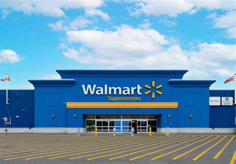

Sales Data Analysis using Excel
Objective: Analyzed sales data to uncover insights and trends.
Tools Used: Excel
Key Contributions:
Created pivot tables to summarize sales by region, product, and customer segment.
Designed interactive charts to visualize trends and performance metrics.
Performed data cleaning and formatting to ensure accuracy in analysis.
Outcome: Delivered actionable insights through comprehensive visualizations, demonstrating proficiency in Excel for data analysis.
Project Link: View the Sales Project
Walmart Retail Sales Analysis with Python

Objective: Explored and visualized Walmart retail sales data to identify trends and improve decision-making.
Tools Used: Python, Jupyter Notebook, Pandas, NumPy, Matplotlib, Seaborn
Key Contributions:
Preprocessed and cleaned data using Pandas, handling missing values and outliers.
Conducted exploratory data analysis (EDA) to identify key sales trends and patterns.
Visualized sales metrics using Matplotlib and Seaborn for better interpretation.
Outcome: Gained hands-on experience in Python for data analysis and visualization in an academic setting.
Project Link: View the Walmart Project
Employee Data Analysis
Objective: Cleaned and analyzed employee data to uncover insights into gender distribution, salary trends, age groups, and city-based comparisons.
Tools Used: Python, Pandas, NumPy, Matplotlib, Seaborn
Key Contributions:
Handled missing values, duplicates, and negative values in the dataset.
Visualized key insights such as gender proportion, average salary by city, and age group distribution.
Performed data transformations, including standardizing gender values and extracting relevant features like age groups.
Outcome: Provided actionable insights through various visualizations and data transformations, demonstrating proficiency in data cleaning and analysis.
Project Link: View the Employee Data Analysis Project